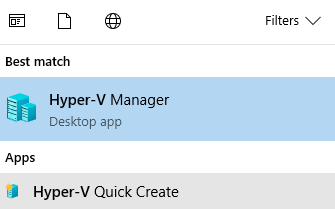
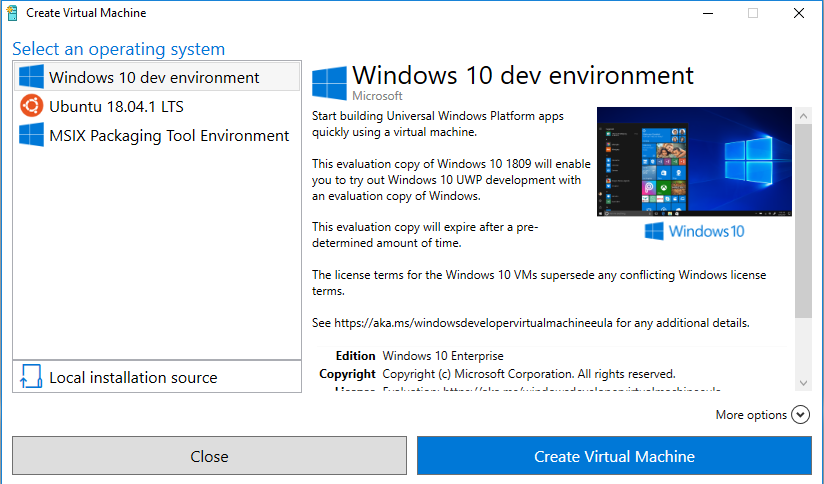
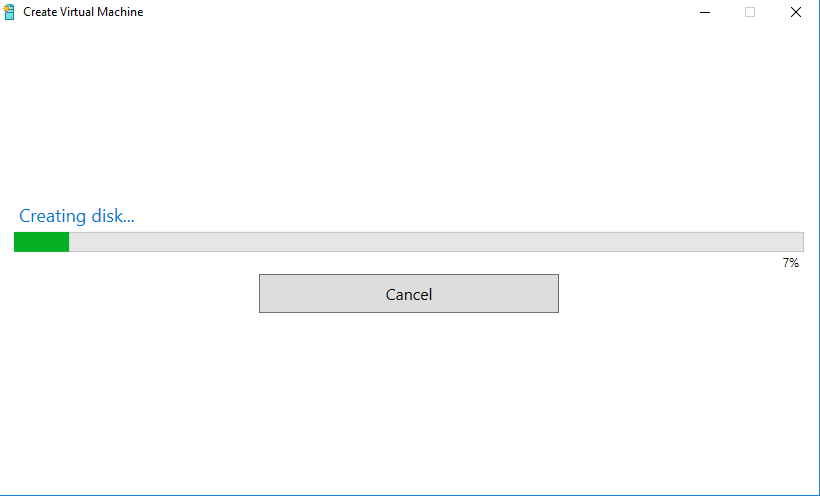
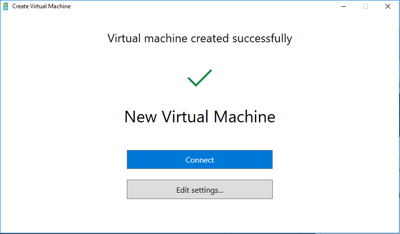
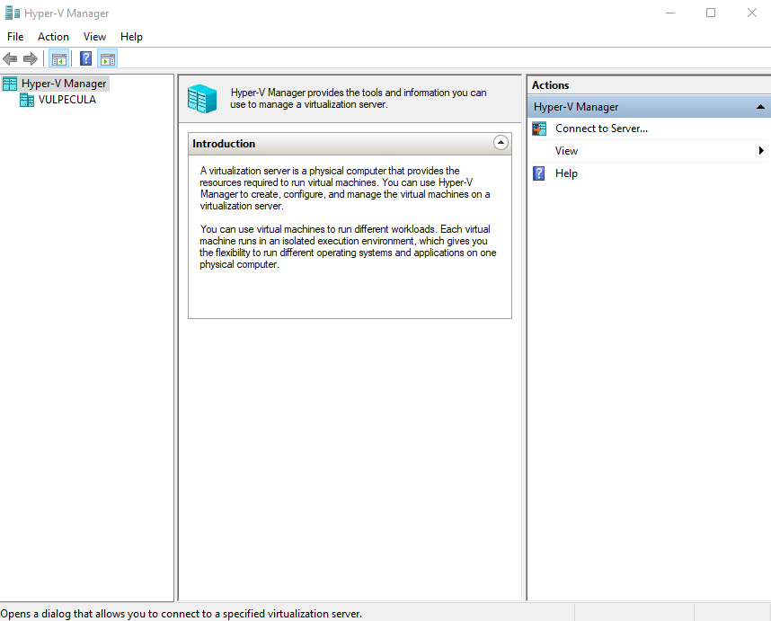
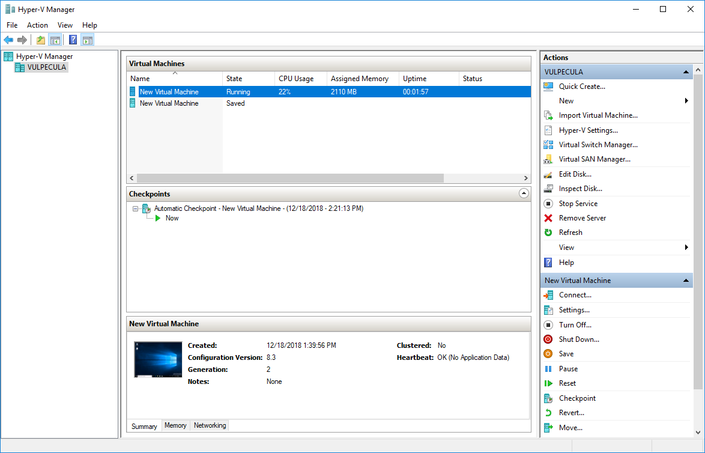

Hyper-V
Hyper-V is a tool that allows Windows to function as a Type 1 hypervisor, in a roughly analagous way to KVM on Linux platforms.
The following Windows variants support Hyper-V:
- Windows 10 Pro & Enterprise
- Windows 8 Pro & Enterprise
- Windows Server (R2 2008 and up)
Enabling Hyper-V
Run the following command via a Powershell 5.1 † terminal as Administrator:
† Shell versioning does matter in this case. Powershell Core 6.0 will not work.
Enable-WindowsOptionalFeature -Online -FeatureName Microsoft-Hyper-V -All
Creating VMs
Once Hyper-V support has been enabled two programs will be available; "Hyper-V Quick Create" and "Hyper-V Manager".

"Hyper-V Quick Create", as the name implies, is the fastest way to start-up a new VM.
VMs can be provisions from local .iso disk images, .vhd/.vhdx virtual hard drives,
or via a Hyper-V gallery item (which will be discussed later).

After selecting a virtual machine and hitting "Creation Virtual Machine" a VM will be kicked off.

After the VM is successfully started, it can be connected to directly from the Quick Create tool.

Managing Existing VMs
Hyper-V Manager allows us to manage VMs that were created previously, either on our local machine or on a remote server.
In order to control previously created local VMs we will need to open Hyper-V Manager with Admin rights.

To use Hyper-V Manager we will need to connect to a Hyper-V server. For the most part this will be our local machine —in this case we will use "Actions"→ "Hyper-V Manager"→"Connect To Server..." and select "Local Computer".

Free-ish Windows Images for Testing
One issue (not exclusive to Hyper-V) with using Windows guest machines is that each guest OS will require it's own license. This can make small-scale testing quite fiddley and somewhat expensive.
However there are a few free-ish options for Windows VM development images.
- Windows 10 Enterprise Developer Environment
- Windows Internet Explorer/Edge Dev Images
- Windows Server Enterprise 2008 R2
Most of theses images have an evaluation license that expires after some number of days (90 or 180 usually). It should be noted that these images can be re-downloaded after their temporarily license expires, but this approach is not particularly suitable for production work.